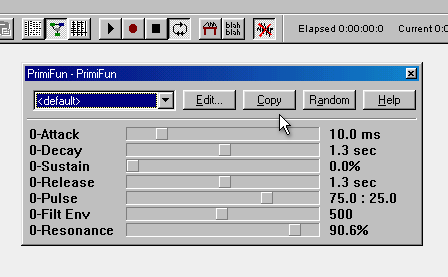

One of the most exciting features in Aldrin, is the ability to record your parameter movements to patterns, which are then easily sequenced into your songs. What this allows, is to tweak any sound parameter within any machine and record them; completely in real-time. This is accomplished by the following steps:
1.
Create a pattern
for the current
machine (note: generators have a default pattern generated automatically)
2.
Add the pattern
to the sequence.
3.
Press the record button
on the
toolbar (or
press
F7
)
4.
Move any parameter
.
All parameter movements will instantly appear
on the pattern, where you fine-tune by editing the numbers. The
next time the pattern is played, the sliders will move by themselves
exactly as you had moved them while recording (watch the example in the
figure).

Tip:
It
is sometimes useful to create loops
in the sequence, and let Aldrin continually loop through a pattern while
you record various different parameters.